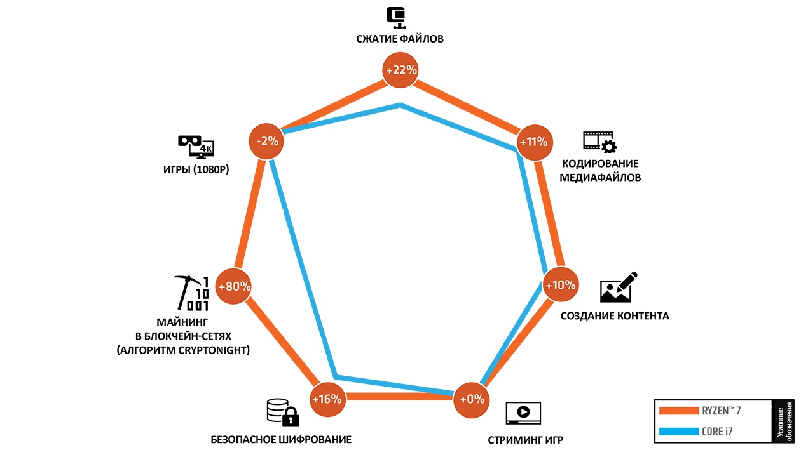
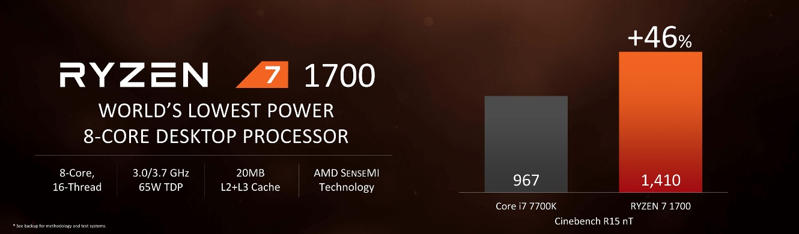

Вернутся на главную
AMD Rizen 7


Описание:
В новой архитектуре AMD Zen используется мощный механизм исполнения, а также
поддерживается функция одновременной многопоточности (SMT). Ядра Zen разработаны для
эффективного использования имеющихся ресурсов микроархитектуры для обеспечения максимальной
вычислительной производительности. Новая трехуровневая кэш-память с низкой задержкой и новые
алгоритмы предварительной выборки значительно уменьшают количество кэш-промахов и увеличивают
пропускную способность по сравнению с предыдущей микроархитектурой.
Технические характеристика товара:
-
ПРОЦЕССОР:
AMD Ryzen 7 1700 3.0GHz/16MB (YD1700BBAEBOX) sAM4 BOX
-
Сокет:
AM4
-
Число ядер ЦП:
8
-
Число потоков:
16
-
Базовая частота:
3 GHz
-
Макс. частота:
3.7 GHz
-
Объем кэш-памяти первого уровня:
768 КБ
-
Объем кэш-памяти второго уровня:
4 MB
-
Объем кэш-памяти третьего уровня:
16 MB
-
Разблок.:
Да
-
Техпроцесс:
14 nm
-
Сокет:
AM4
-
Версия PCI Express:
PCIe 3.0 x16
-
Защита от перегрев:
Wraith Spire (LED)
-
Величина отвода тепловой мощности по умолчанию / величина отвода тепловой мощности:
65W
-
Макс. температура:
95°C
Подробное описание товара
- Производительность и эффективность для приложений следующего поколения.
Облачные вычисления, производительность промышленного уровня, технологии
виртуальной реальности, игры и безопасность данных открывают новые горизонты
и требуют более высокого уровня производительности вычислений при максимальной
энергоэффективности. Изначально инженеры компании AMD разработали новую архитектуру Zen таким образом,
чтобы она могла соответствовать и даже превосходить высокие требования, касающиеся производительности
и эффективности, не только приложений следующего, но и дальнейших поколений.
-
Технология Neural Net Prediction
Встроенный искусственный интеллект позволяет процессору эффективнее справляться с выполнением ваших
приложений.
-
Технология Smart Prefetch
Алгоритмы обучения, которые заранее предугадывают и
предзагружают в кэш-память необходимые ПО данные для ускорения вычислений и минимизации времени отклика.
-
Технология Extended Frequency Range
Автоматическое дополнительное повышение производительности для пользователей игровых ПК с
системами охлаждения премиум-класса.
-
Технология Precision Boost
Производительность процессора регулируется в режиме реального времени для соответствия требованиям
нагрузки ваших игр и приложений.
-
Технология Pure Power
Работа процессора без излишнего тепловыделения обеспечивается с помощью искусственного интеллекта,
встроенных датчиков и оптимизированного дизайна микросхемы.
Сравнение с процессором IntelCore i7 7700k


Также рекомендуем к данному товару
Видео Карта AMD RX580
Материнская плата Asus Prime X470-Pro
Корпус GameMax Elysium